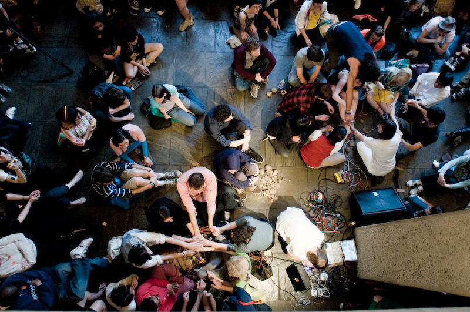

archive stuff, and keep track of things.
Back to Blog | Gary-Martin
Lucky Dragons - Make a Baby |
|---|
|
Lucky Dragons is an ongoing collaboration between Los Angeles-based artists Sarah Rara and Luke Fischbeck. Their work explores forms of participation and dissent through performance, recordings and publications. I have been fond of their recorded outputs for a long time. And Luke Fischbeck is the reason I refer to my recorded outputs as songs rather than tracks. (Unfortunately I can't find this interview!!) Their live sets blur the line between audience and performer and usually end with a performance of Make a Baby, a synthesiser played by two or more people touching one another on the skin. I think this approach to participatory music making is really great; it’s accessible to the public, engaging and encourages collaboration and active listening. I will try and incorporate something like this project into a live set I am working on, hopefully in time for the next Salon event. |